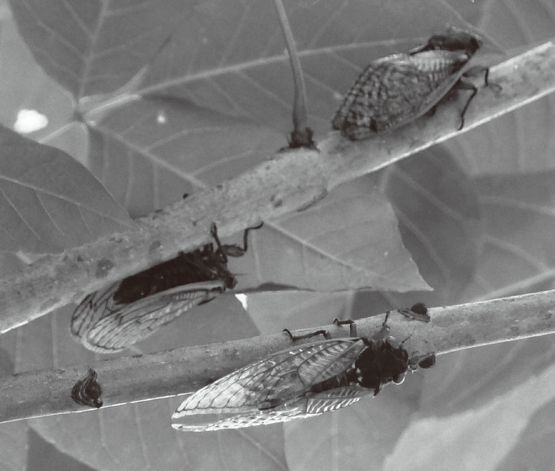

质数是指除了1和它本身外，不含其他因数的大于1的自然数 ，如2，3，5，7，…。质数有许多有趣的特性，自古以来有很多数学家为之着迷。不仅数学家，就连脑袋小小的蝉，也在生存的竞争中融入了质数，令人很难相信吧!
这种不可思议的蝉分布在美国中东部地区。蝉的若虫生活在土里，数年后破土而出，羽化为成虫，这段时间一般为6～9年。而美国的这种蝉会在地下蛰伏13年或17年 ，到时一起破土、羽化，随后落满树枝，发出尖锐的鸣叫声。目前所知的，蛰伏周期为13年的有4种，蛰伏周期为17年的有3种。由于13和17都是质数，所以这些蝉被称为“质数蝉 ”，又因为他们会呈周期性地群体出现，所以也称“周期蝉 ”，如图2-13所示。

图2-13 质数蝉照片
为什么这些蝉每隔13年或17年才破土而出呢？这个困扰了人们很久的谜团后来被一位日本人解开了，他就是任职于静冈大学的吉村仁教授。他对蝉的进化史进行研究，一直追溯到了远古的冰河时期，才找到了答案。
质数蝉的祖先原本与其他蝉的祖先有着相同的习性，等身体充分成长后便破土而出，并非是与同伴商量好在某一年同时羽化。但是在180万年前，地球经历了一次冰河期，自然环境发生了巨大的变化 。
质数蝉的祖先们生活的美洲大陆，有一半的陆地被冰川覆盖了。天寒地冻的环境让许多若虫还没来得及破土而出就被冻死了，而部分没有遭遇冰川覆盖的地方，动植物得以勉强存活，这些相对比较温暖的地方被称为“冰河期避难所 ”。虽然生活在这些地方的若虫逃过了一劫，但是由于气候寒冷，树根的营养极度匮乏，若虫生长速度变得非常缓慢。今天，质数蝉的若虫期长达13年或17年，就是受了这次变故的影响。
但是，生长缓慢的质数蝉的祖先们面临着一个严峻的问题，那就是蝉羽化为成虫后的寿命只有两周，如果在这两周内找不到交配对象，产不下虫卵，就会在没有子孙的情况下死去。所以，在地下蛰伏了那么长时间，加上经历了冰河期后同伴的数量变得少之又少，如果它们再七零八落地分散破土，想找到交配对象几乎是不可能的。
因此，质数蝉破土、羽化的时间逐渐变得统一起来。与同类在同一时间破土而出的话，找到交配对象并留下子孙的概率就会大大增加，只有这样，蝉的种群才能繁盛。换句话说，质数蝉并非身体成熟了就来到地面，而是为了更有利于繁衍后代，经过一个固定时间才来到地面。于是，决定破土、羽化的因素不再是“身体成熟”，而是“时间” 。这些在生存竞争中获胜的蝉的后代就是今天的质数蝉。
但是，为什么质数蝉破土而出的时间间隔一定是质数呢？这个问题与质数蝉的进化历程有关。科学家们认为，在很久以前有很多种周期蝉，但不以质数为破土周期的蝉，很难生存下来。
例如，曾经有过破土周期为9年和18年的周期蝉，这两种蝉每隔18年都会有一次大规模的破土行动。时间上的重叠让两种蝉发生了杂交，产生了大量的杂交蝉，而杂交蝉的破土周期就变为9年到18年之间的某一年。这些破土周期不定的杂交蝉在破土而出后，能遇到交配对象和留下后代的概率大大降低，其种群自然很难昌盛，结局多半是走向灭绝。从破土周期为9年和18年的蝉的命运来看，它们留下的子孙后代一定是越来越少的。
综上所述，在破土时间重叠的年份生出大量的杂交蝉，肯定不利于种群的繁荣。因此，那些破土周期容易重叠的种群逐渐走向了灭绝，最后生存下来的是破土周期不易重叠的种群。
以13年或17年为破土周期的蝉，每隔221年才会出现一次破土期重叠的情况。为什么这个时间会那么长呢？这就要从质数本身的性质说起了。两个或多个整数公有的倍数被称为“公倍数”，公倍数中最小的一个被称为最小公倍数 。两种周期蝉的破土时间会在破土周期的最小公倍数年出现重叠。例如，由于4和6的最小公倍数为12（4×3＝6×2＝12），所以破土周期分别为4年和6年的蝉的破土时间每隔12年会出现重叠。
能同时被两个整数整除的数是它们的公约数 ，有公约数的两个整数的最小公倍数往往不会很大。例如，4和6都能被2整除，2就是它们的公约数。但如果两个整数都是质数，那么它们就没有公约数了 。这是由于质数除了1和它本身，不能被任何正整数整除。既然没有公约数，就不容易出现破土时间的重叠了。以质数13和17（单位：年）为破土周期的质数蝉的破土时间很少重叠，所以才生存至今 。
蝉肯定不懂何为质数，只是它们在几百万年的自然选择中，不知不觉地得到了质数的“庇佑”，存活至今。在全球变暖这一环境问题日趋严重的当下，有科学家预言，再过5万年会出现下一个冰河期。届时，地球将再度被冰川覆盖，那时也许会出现另一个令人类惊叹的物种。